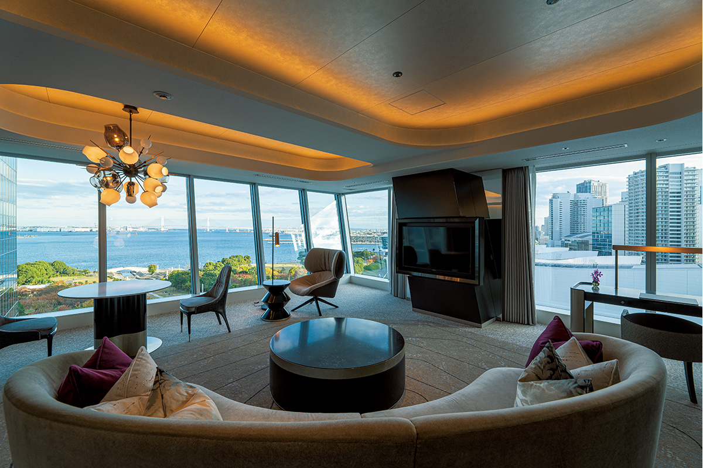
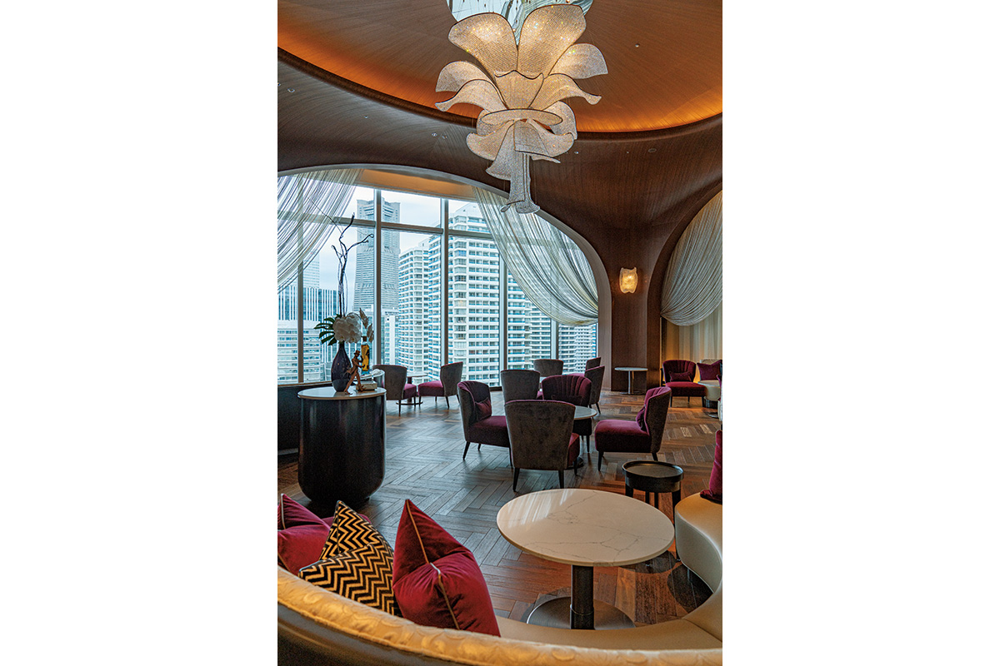
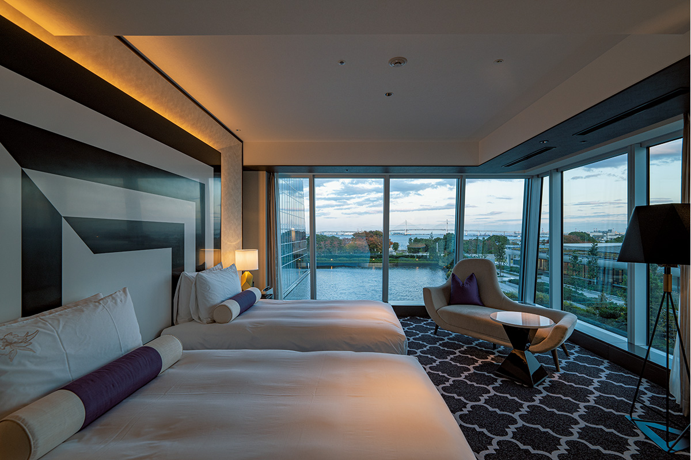
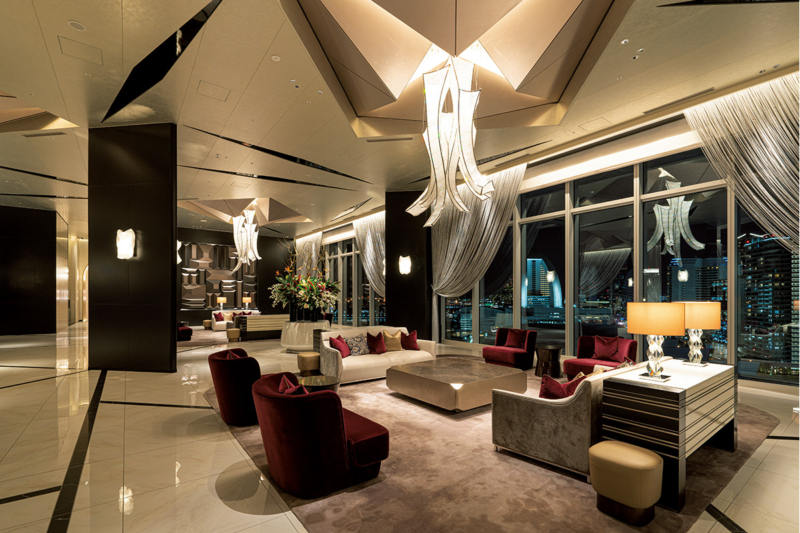
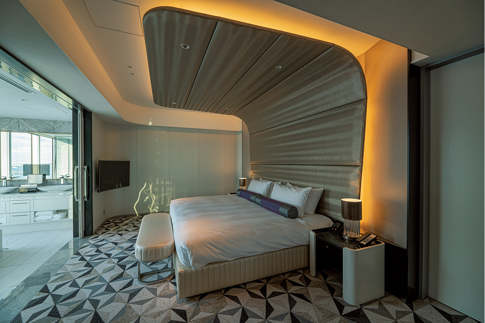
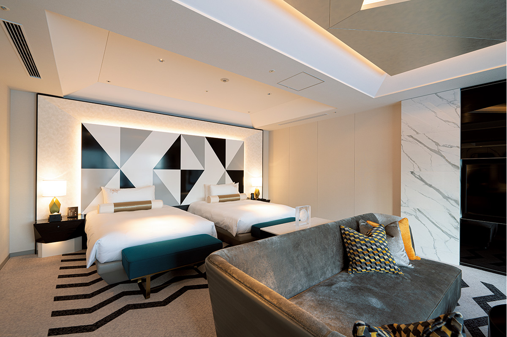
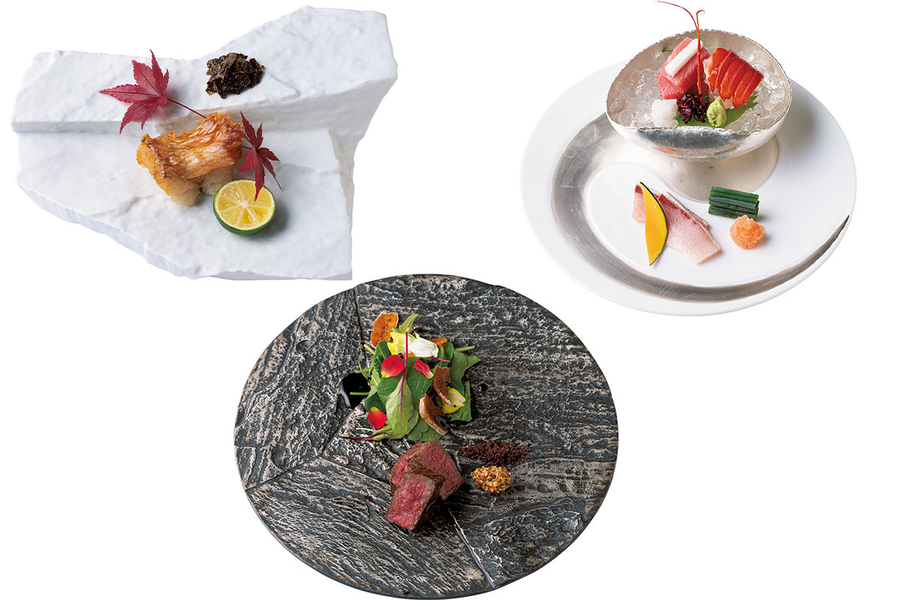
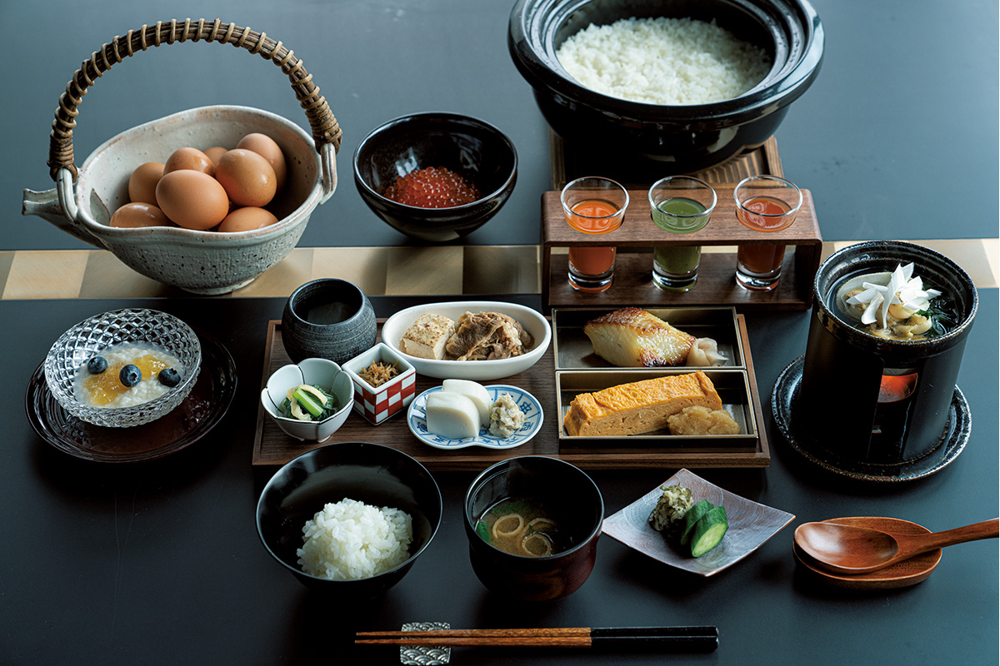

Префектура Канагава · Ёкогама · где остановиться
The Kahala Hotel & Resort Yokohama: гавайский отель в стеклянной башне у порта Ёкогамы

Знаменитый отель из Гонолулу впервые вышел за пределы Гавайев в 2020 году и выбрал для этого Ёкогаму. Причина спрятана в истории порта, откуда полтора века назад отправились на острова первые японские переселенцы.
История
Почему именно Ёкогама
The Kahala Hotel & Resort родом с Гавайев, и для своего первого проекта за границей этот прославленный отель выбрал Ёкогаму. Торговля Японии с внешним миром началась в июне 1859 года, когда открылись порты Ёкогамы и Нагасаки, и в 2020 году Ёкогама отметила 161 год со дня открытия порта.
Но у выбора есть и более личная причина. Японцы до сих пор любят Гавайи, каждый год туда едут в отпуск множество туристов, а связь Гавайев именно с Ёкогамой началась с людей, чей труд и успех помнят до сих пор. В 1868 году от района, где стоит пирс Осамбаси, на Гавайи отплыли первые японские переселенцы. Их стали называть «ганнэнмоно», «людьми первого года» новой эпохи Мэйдзи, и их вклад спустя полтора века по-прежнему заметен в политике и экономике островов.
Первым государственным гостем нового правительства Мэйдзи стал гавайский король Давид Калакауа.
Эту давнюю историю и продолжает отель, открывшийся в порту, откуда когда-то уходили корабли на Гавайи.
Здание
Стеклянная башня в Минато Мирай
The Kahala Hotel & Resort Yokohama открылся 23 сентября 2020 года. Ёкогама, как Кобе и Нагасаки, всегда первой встречала всё иностранное, и отель встал в Минато Мирай, самом футуристическом районе города, где высотные офисы и жилые дома соседствуют с международным конгресс-центром. Даже среди них сверкающее стеклянное здание отеля сразу бросается в глаза.
От гавайского оригинала он отличается совершенно. Это городской курорт с дерзкой архитектурой, рассчитанный и на горожан, которым нужен отдых от будней, и на руководителей, которые работают из отеля удалённо. Поклонники гавайского отеля поначалу могут удивиться столь городскому и динамичному облику.

Но стоит увидеть консьержей за работой, и становится ясно, что это тот же отель, переосмысленный на современный лад. Внешне он другой, а главное в гостеприимстве осталось прежним: персонал готов выполнить любую просьбу и продумывает каждую мелочь. Философия «отеля, который любят», выстроенная за десятилетия на Гавайях, легла и в основу нового отеля в Ёкогаме.
Номера
Хрусталь, модерн и вид на залив
В отеле 146 номеров семи типов, и все они просторные. Общая идея их оформления называется «хрустальный модерн».

В небесном лобби на 14-м этаже с высокого потолка свисают люстры, придуманные по образу короны гавайских королей. Полукруглые диваны цвета бургундского вина и рояль добавляют залу роскоши.

Площадь номеров от 47,44 до 119,46 кв. м, сьютов всего девять.


Кухня
Японские сезоны на тарелке
В отеле три ресторана: итальянский, японский и тэппанъяки.
Шеф итальянского RISTORANTE OZIO формулирует свой стиль так: «Модерн это и есть классика». Он дважды стажировался в Италии и больше десяти лет работал во французских ресторанах Японии, поэтому его итальянская кухня изысканна и с французским оттенком. Вина к блюдам подбирает сомелье, кавалер ордена шампанского.
Японский ресторан на другом этаже состоит только из отдельных кабинетов и окружён водным садом. В 2021 году он назывался «Хама», к 2026 году получил название «Ханагоёми». Шеф-повар ставит во главу угла сезонные продукты и глубокий, спокойный вкус. Особенно поражает бульон даси в фирменном блюде, супе ванмоно. Управляющий ресторана собрал сакэ всех тринадцати сакэварен префектуры Канагава, и его знания и страсть к сакэ помогают подобрать напиток так, чтобы блюдо раскрылось ещё лучше.

Завтрак здесь тоже японский: сет «Хама-дзэн» подают в том же ресторане. Яйца привозят с фермы из Сагамихары, той же префектуры, и их едят сырыми с рисом, а мисо-суп на бульоне из сушёных сардин выходит главным блюдом утра.

Японские традиции и японское мастерство видны в отеле повсюду. Его главными козырями, судя по всему, станут консьержи и кухня.
The Kahala Hotel & Resort Yokohama
- Адрес
- префектура Канагава, Ёкогама, район Ниси, Минатомирай, 1-1-3
- Телефон
- +81 45-522-0008
- Номера
- 146
- Цены / Вход
- сьюты от 320 000 иен за номер (без налога и сервисного сбора)
- Заезд / выезд
- 15:00 / 12:00
- Как добраться
- на машине около 6 минут от съезда Хигаси-Канагава столичной скоростной дороги (линия Канагава 1, Ёкоха); от станции Ёкогама около 6 минут на такси
Фото: Ацуси Ямахира.